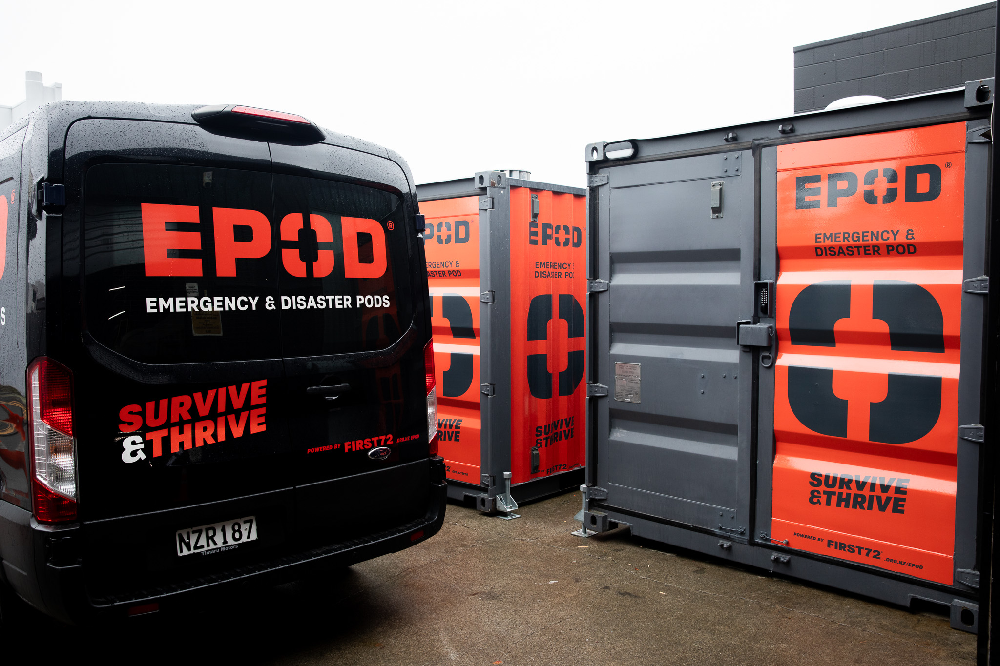

Practical, real-world courses that prepare individuals, workplaces and communities to act with confidence when it counts — not just read about it afterward.
16 courses · Self-paced · Certificates on completion

READY IN 72HThe event hits. Trained people act calmly while others freeze.
Plans kick in — comms, first aid, evacuation, accountability.
Resources stretch. Coordination keeps people safe and supplied.
Outside help arrives. The prepared are already on the front foot.
We turn emergency expertise into clear, practical training — so you're ready to act when it counts, not left guessing.
Explore the coursesThe same trusted training, shaped for whoever needs it — at home, at work, or across a whole community.
Get your home and family ready for the first 72 hours — build your plan, your kit, and the confidence to act.
Equip your staff to respond safely. Trackable courses and certificates for the whole team, all in one dashboard.
Help neighbourhoods prepare and respond together. Practical training for groups, marae, councils and civil defence.
A few of our most-taken courses. Many map to NZQA unit standards.
Build a compliant emergency plan for any worksite — evacuation, comms and the first 72 hours.
What to pack, why it matters, and how to keep it current for your family.
Establish and run a community-led emergency hub, coordinated with local civil defence.
Training gets you ready. The right gear keeps you going. Explore First 72's EPODs, grab bags, home kits, and more — built for the first 72 hours and beyond.
We came to the team with a challenge and they returned an excellent emergency kit solution — expert advice, clear communication, and thoughtful extras beyond what we expected.
They assembled and distributed two dozen emergency pods across the South Island in under three months. Feedback was overwhelmingly positive — quality gear and clear training throughout.
Their training was hands-on and relevant, and genuinely strengthened our ability to respond. We continue to work with them on wider preparedness projects and fully endorse them.
Courses created with real emergency-management knowledge — practical, current, and grounded in how events actually unfold.
Every module teaches something you can act on. Real scenarios and checklists, not theory you forget by Friday.
Certificates on completion and team tracking for businesses — so readiness is something you can actually demonstrate.
Start with one course, or roll it out across your whole organisation.